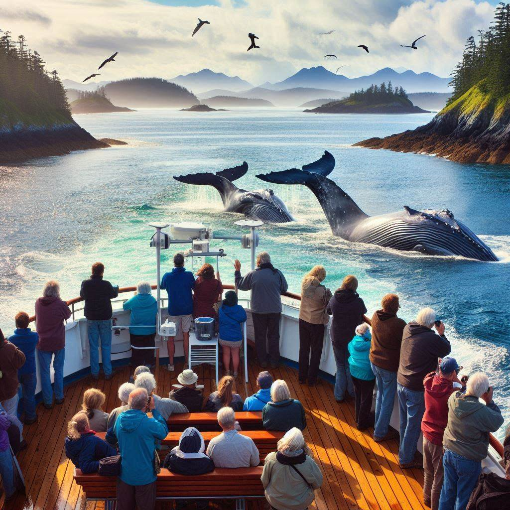
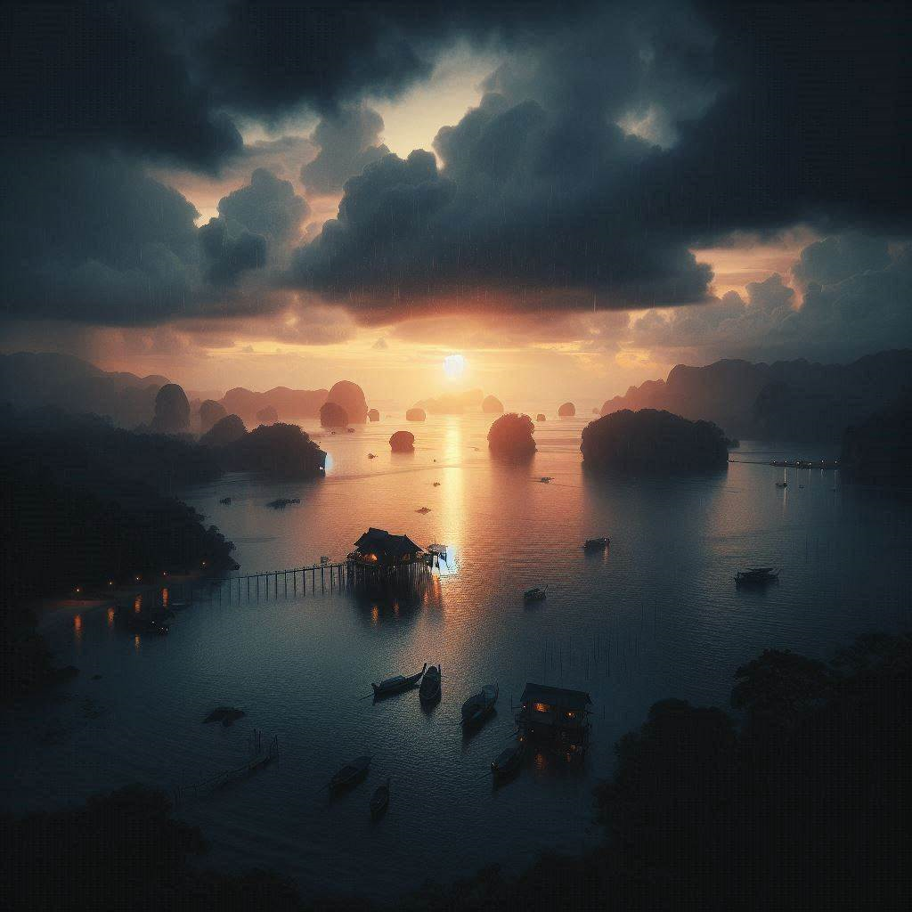

About the Islands
The San Juan Islands are a stunning archipelago located in the Pacific Northwest, offering a perfect blend of outdoor adventure, cultural attractions, and tranquil getaways.
- Over 170 islands in total
- Renowned for whale watching
- Rich cultural heritage
Top Attractions

Whale Watching
Experience the majestic orca whales in their natural habitat, a must-see on the San Juan Islands.
National Historical Park
Explore the history of early settlers and the Pig War at the San Juan Island National Historical Park.

Lime Kiln Point
Known as Whale Watch Park, this is the best land-based location for spotting whales in the islands.